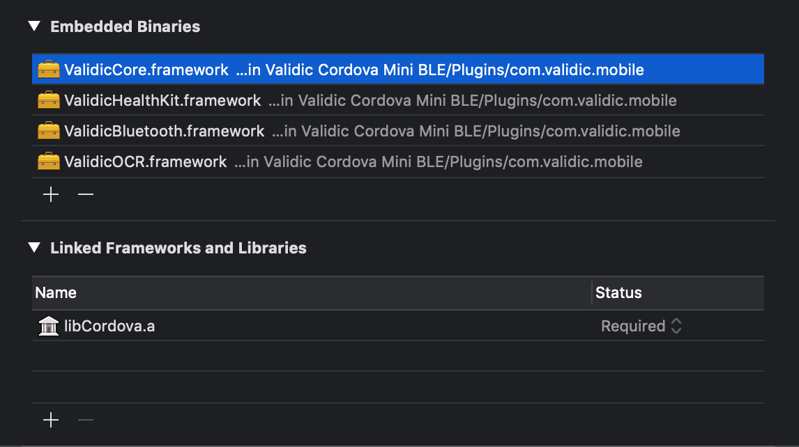
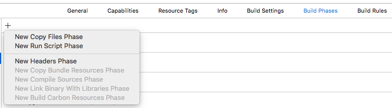
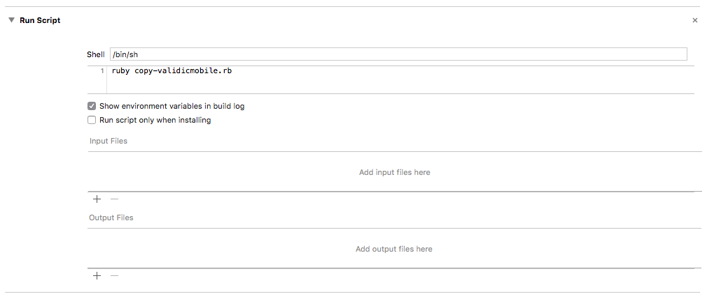

Getting started
$ npm install react-native-validic-session --save`
or use yarn
$ yarn add react-native-validic-session`
Linking
Automatic
react-native link react-native-validic-session
For iOS users using Pods
You still need to run pod install after running the above link command inside your IOS folder.
Manual
iOS (via CocoaPods) RN >= 60
Add the following lines to your build targets in your Podfile
pod 'React', :path => '../node_modules/react-native'
pod 'RNValidicSession', :path= => '../node_modules/react-native-validic-session'
Then run pod install
iOS (without CocoaPods)
In XCode, in the project navigator:
- Right click Libraries
- Add Files to [your project's name]
- Go to
node_modules/react-native-validic-session/ios - Add the file
RNValidicHealthkit.xcodeproj
In XCode, in the project navigator, select your project.
- Add the
libRNValidicHealthkit.afrom the RNValidicHealthkit project to your project's Build Phases ➜ Link Binary With Libraries - Click
.xcodeprojfile you added before in the project navigator and go the Build Settings tab. Make sure All is toggled on (instead of Basic). - Look for Header Search Paths and make sure it contains both
$(SRCROOT)/../react-native/Reactand$(SRCROOT)/../../React - Mark both as recursive (should be OK by default).
In the General tab there will be a panel at the bottom of the screen labeled "Embedded Binaries". You should see the frameworks added here.

Next copy 'copy-validicmobile.rb' to the ios folder of your project.
Go to the build settings of your target. In the "Build Phases" tab add a new build phase by clicking the plus button at the top and selecting "New Run Script Phase".

In the new phase's text area paste in ruby copy-validicmobile.rb.

Android
- Open up
android/app/src/main/java/[...]/MainApplication.java
- Add
import com.validic.mobile.rn.session.RNValidicMobileSessionPackage;to the imports at the top of the file - Add
new RNValidicMobileSessionPackage()to the list returned by thegetPackages()method
- Append the following lines to
android/settings.gradle:include ':react-native-validic-session' project(':react-native-validic-session').projectDir = new File(rootProject.projectDir, '../node_modules/react-native-validic-session/android') - Insert the following lines inside the dependencies block in
android/app/build.gradle:compile project(':react-native-validic-session')
Usage
Provisioning a User
The Validic Mobile library requires a Validic user. A Validic user can be provisioned using the Validic API. The library requires a Validic user ID, user access token and organization ID. It is recommended to provision the user on your server, the mobile app could then authenticate to the server and retrieve the Validic credentials.
import ValidicSession from 'react-native-validic-session';
Managing a session
The ValidicSession persists a user across the sdk and all pending record uploads. This data is persisted between
app launches but is deleted if the ValidicSession.endSession function is called.
A new Session is started by passing previously provisioned Validic user credentials to the startSession function.
ValidicSession.startSession({user_id:USER_ID, org_id: ORGANIZATION_ID, user_token: USER_ACCESS_TOKEN});
The supplied credentials are not validated when the session is created. Records will fail to upload if invalid credentials have been provided. Credentials are stored persistently. To change credentials, call:
ValidicSession.endSession();
or uninstall the app. When a new session is created, pending record uploads and subscriptons are reset. For this reason, a new session should only be created if a session it not already active.
The app can be informed of record upload success and failure by registering callbacks using:
Events
Listeners can be added to listen for success or failure of records submitted to the Validic Api. Registration of listeners is typically done during component initialization to catch events for record uploads which may occur upon app restart.
ValidicSession.eventEmitter.addListener('validic:session:onsuccess', (record)=>{
// the record was successfully uploaded to validic servers
console.log("Successfully got record" + JSON.stringify(record));
});
ValidicSession.eventEmitter.addListener('validic:session:onerror', (error, record)=>{
// an error was returned while submitting the record
console.error("Got error: "+error + " for record: " + record.activity_id);
});
Example
The following example starts a session if a session is not already active and registers session listeners.
componentDidMount(){
ValidicSession.eventEmitter.addListener('validic:session:onsuccess', (record)=>{
// the record was successfully uploaded to validic servers
console.log("Successfully got record" + JSON.stringify(record));
});
ValidicSession.eventEmitter.addListener('validic:session:onerror', (error, record)=>{
// an error was returned while submitting the record
console.error("Got error: "+error + " for record: " + record.activity_id);
});
var user = {
user_id: "replace with userid",
user_token : "replace with access token",
org_id : "replace with organization id"
};
// check if a persistent user already exists
ValidicSession.getUser((response)=>{
//if not, start a new session
if(response.user == null){
ValidicSession.startSession(user);
}
});
}
...
//remove event listeners when the component is going to be unmounted
componentWillUnmount(){
ValidicSession.eventEmitter.removeAllListeners('validic:session:onsuccess');
ValidicSession.eventEmitter.removeAllListeners('validic:session:onerror');
}